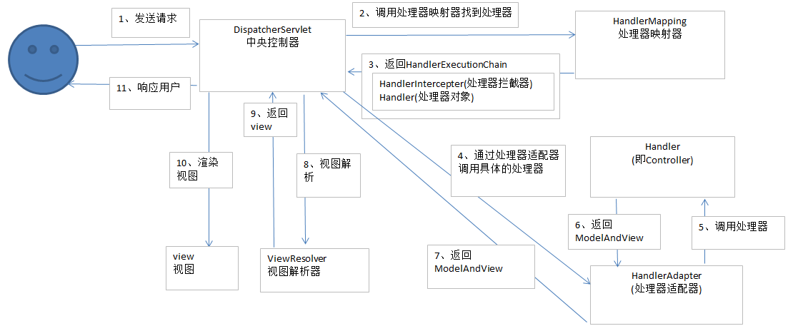
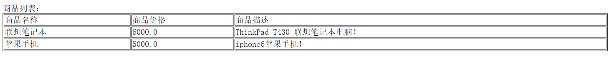
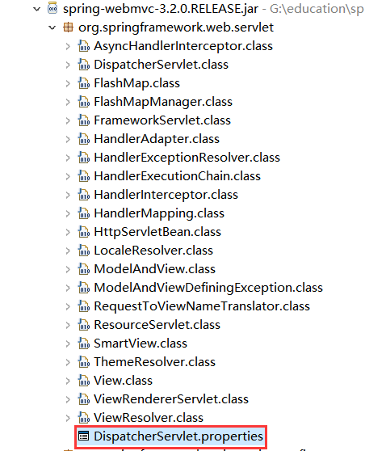
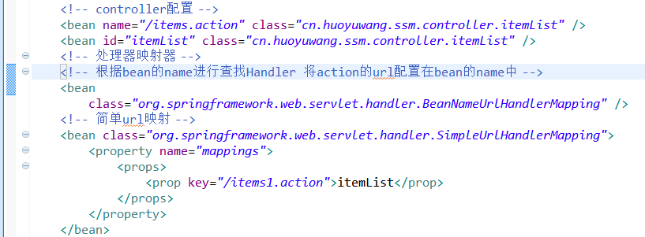
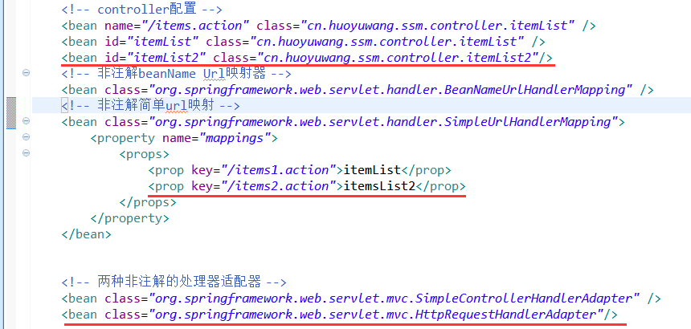

1. SpringMVC架构
1.1 Spring web mvc介绍
Spring web mvc和Struts2都属于表现层的框架,它是Spring框架的一部分,我们可以从Spring的整体结构中看得出来：
1.2 Web MVC
1.2.1 架构图
mvc设计模式在b/s系统下应用：
1.2.2 架构流程
- 用户发起request请求至控制器(Controller)，控制接收用户请求的数据，委托给模型进行处理。
- 控制器通过模型(Model)处理数据并得到处理结果，模型通常是指业务逻辑。
- 模型处理结果返回给控制器。
- 控制器将模型数据在视图(View)中展示，web中模型无法将数据直接在视图上显示，需要通过控制器完成。如果在C/S应用中模型是可以将数据在视图中展示的。
- 控制器将视图response响应给用户–通过视图展示给用户要的数据或处理结果。
1.3 Spring web mvc架构
1.3.1 架构图

1.3.2 架构流程
- 用户发送请求至前端控制器(DispatcherServlet)。
- 前端控制器(DispatcherServlet)收到请求调用处理器映射器(HandlerMapping)–处理器映射器根据请求url找到具体的处理器，生成处理器对象及处理器拦截器(如果有则生成)一并返回给DispatcherServlet。
- 前端控制器(DispatcherServlet)通过处理器适配器(HandlerAdapter)调用处理器–执行处理器(Controller，也叫后端控制器)，Controller执行完成返回ModelAndView对象；HandlerAdapter将controller执行结果ModelAndView返回给DispatcherServlet。
- DispatcherServlet将ModelAndView传给ViewReslover视图解析器–ViewReslover解析后返回具体View。
- DispatcherServlet对View进行渲染视图（即将模型数据填充至视图中）。
- DispatcherServlet响应用户
1.3.3 组件说明
DispatcherServlet：前端控制器
用户请求到达前端控制器，它就相当于mvc模式中的c，dispatcherServlet是整个流程控制的中心，由它调用其它组件处理用户的请求，dispatcherServlet的存在降低了组件之间的耦合性。
HandlerMapping：处理器映射器
HandlerMapping负责根据用户请求找到Handler即处理器，springmvc提供了不同的映射器实现不同的映射方式，例如：配置文件方式，实现接口方式，注解方式等。
Handler：处理器
Handler 是继DispatcherServlet前端控制器的后端控制器，在DispatcherServlet的控制下Handler对具体的用户请求进行处理。由于Handler涉及到具体的用户业务请求，所以一般情况需要程序员根据业务需求开发Handler。
HandlAdapter：处理器适配器
通过HandlerAdapter对处理器进行执行，这是适配器模式的应用，通过扩展适配器可以对更多类型的处理器进行执行。
View Resolver：视图解析器
View Resolver负责将处理结果生成View视图，View Resolver首先根据逻辑视图名解析成物理视图名即具体的页面地址，再生成View视图对象，最后对View进行渲染将处理结果通过页面展示给用户。 springmvc框架提供了很多的View视图类型，包括：jstlView、freemarkerView、pdfView等。一般情况下需要通过页面标签或页面模版技术将模型数据通过页面展示给用户，需要由程序员根据业务需求开发具体的页面。
2. 商品订单业务说明
本教程在通过商品订单业务学习使用springmvc进行功能开发。
2.1 业务流程
- 管理员维护商品信息
- 用户挑选商品，购买，创建订单
2.2 数据库环境
获取sql文件请点击百度云 ，密码：dwlw
先导入sql_table.sql（表结构），再导入 sql_data.sql（表数据）
如图：

2.3 商品订单数据模型

3. SpringMVC入门
3.1 需求
实现商品查询列表功能。
3.2 开发环境准备
本教程使用myEclipse+tomcat7开发
3.3 第一步:建立一个Web项目
在myEclipse下创建动态web工程springmvc_first。
步骤：File ==> New ==> Web Project
如图：
注意：选择java EE version选择javaEE5-web2.5,选择javaEE6或javaEE7生成的项目在WEB-INF目录下面找不到web.xml。
3.4 第二步:导入spring3.2.0的jar包
需要spring3.2所有jar（一定包括spring-webmvc-3.2.0.RELEASE.jar）
获取相关jar包请点击百度云，密码：p7qg
把上面所有的jar包放入WebRoot/WEB-INF/lib目录中
3.5 第三步：前端控制器配置
在WEB-INF目录下的web.xml写入
1 | <servlet> |
[说明]
load-on-startup：表示servlet随服务启动；
url-pattern：*.action的请交给DispatcherServlet处理。
contextConfigLocation：指定springmvc配置的加载位置，如果不指定则默认加载WEB-INF/[DispatcherServlet 的Servlet 名字]-servlet.xml。
3.5.1 Servlet拦截方式
- 拦截固定后缀的url，比如设置为 .do、.action， 例如：/user/add.action ,此方法最简单，不会导致静态资源（jpg,js,css）被拦截。
- 拦截所有，设置为/，例如：/user/add /user/add.action,此方法可以实现REST风格的url，很多互联网类型的应用使用这种方式；但是此方法会导致静态文件（jpg,js,css）被拦截后不能正常显示。需要特殊处理。
拦截所有，设置为/*，此设置方法错误，因为请求到Action，当action转到jsp时再次被拦截，提示不能根据jsp路径mapping成功。
3.6 第四步：springmvc配置文件
Springmvc默认加载WEB-INF/[前端控制器的名字]-servlet.xml，也可以在前端控制器定义处指定加载的配置文件，如下：
1
2
3
4<init-param>
<param-name>contextConfigLocation</param-name>
<param-value>classpath:springmvc.xml</param-value>
</init-param>如上代码，通过contextConfigLocation加载classpath下的springmvc.xml配置文件。
需要新建一个Source Folder：config
步骤：鼠标右键springmvc_first ==> New ==> Source Folder 如下图：
在config文件里面创建springmvc.xml3.7 第五步：配置处理器适配器
在springmvc.xml文件配置如下：
1
2
3
4
5
6
7
8
9
10
11
12
13
14
15
16<beans xmlns="http://www.springframework.org/schema/beans"
xmlns:xsi="http://www.w3.org/2001/XMLSchema-instance" xmlns:mvc="http://www.springframework.org/schema/mvc"
xmlns:context="http://www.springframework.org/schema/context"
xmlns:aop="http://www.springframework.org/schema/aop" xmlns:tx="http://www.springframework.org/schema/tx"
xsi:schemaLocation="http://www.springframework.org/schema/beans
http://www.springframework.org/schema/beans/spring-beans-3.2.xsd
http://www.springframework.org/schema/mvc
http://www.springframework.org/schema/mvc/spring-mvc-3.2.xsd
http://www.springframework.org/schema/context
http://www.springframework.org/schema/context/spring-context-3.2.xsd
http://www.springframework.org/schema/aop
http://www.springframework.org/schema/aop/spring-aop-3.2.xsd
http://www.springframework.org/schema/tx
http://www.springframework.org/schema/tx/spring-tx-3.2.xsd ">
<bean class="org.springframework.web.servlet.mvc.SimpleControllerHandlerAdapter"/>
</beans>[说明]
SimpleControllerHandlerAdapter：即简单控制器处理适配器，所有实现了org.springframework.web.servlet.mvc.Controller 接口的Bean作为Springmvc的后端控制器。3.8 第六步：处理器开发
在项目的src目录下新建两个Package：cn.huoyuwang.ssm.controller和cn.huoyuwang.ssm.po
包说明：
cn：域名
huoyuwang：公司名或项目名
ssm：项目框架
controller：写得所有处理器放在里面
po：实体类（po里面的实体类文件由mybatis逆向工程生成，生成的步骤请参考我的另一篇博客：mybatis逆向工程生成源码）
在controller目录下新建一个class文件：itemList1
2
3
4
5
6
7
8
9
10
11
12
13
14
15
16
17
18
19
20
21
22
23
24public class itemList implements Controller {
public ModelAndView handleRequest(HttpServletRequest request,HttpServletResponse response) throws Exception {
//商品列表
List<Items> itemsList = new ArrayList<Items>();
Items items_1 = new Items();
items_1.setName("联想笔记本");
items_1.setPrice(6000f);
items_1.setDetail("ThinkPad T430 联想笔记本电脑！");
Items items_2 = new Items();
items_2.setName("苹果手机");
items_2.setPrice(5000f);
items_2.setDetail("iphone6苹果手机！");
itemsList.add(items_1);
itemsList.add(items_2);
//创建modelAndView准备填充数据、设置视图
ModelAndView modelAndView = new ModelAndView();
//填充数据
modelAndView.addObject("itemsList", itemsList);
//视图
modelAndView.setViewName("order/itemsList");
return modelAndView;
}
}
org.springframework.web.servlet.mvc.Controller：处理器必须实现Controller 接口。
ModelAndView：包含了模型数据及逻辑视图名
3.9第七步：配置处理器映射器
在springmvc.xml文件配置如下：1
2
3<!-- 处理器映射器 -->
<!-- 根据bean的name进行查找Handler 将action的url配置在bean的name中 -->
<bean class="org.springframework.web.servlet.handler.BeanNameUrlHandlerMapping" />
BeanNameUrlHandlerMapping：表示将定义的Bean名字作为请求的url，需要将编写的controller在spring容器中进行配置，且指定bean的name为请求的url，且必须以.action结尾。
3.10第八步：处理器配置
在springmvc.xml文件配置如下：1
2<!-- controller配置 -->
<bean name="/items.action" id="itemList" class="cn.huoyuwang.ssm.controller.itemList"/>
name=”/items.action”：前边配置的处理器映射器为BeanNameUrlHandlerMapping，如果请求的URL 为“上下文/items.action”将会成功映射到itemList控制器。
3.11第九步：配置视图解析器
在springmvc.xml文件配置如下：1
2
3
4
5
6<!-- ViewResolver -->
<bean class="org.springframework.web.servlet.view.InternalResourceViewResolver">
<property name="viewClass" value="org.springframework.web.servlet.view.JstlView"/>
<property name="prefix" value="/WEB-INF/jsp/"/>
<property name="suffix" value=".jsp"/>
</bean>
InternalResourceViewResolver：支持JSP视图解析
viewClass：JstlView表示JSP模板页面需要使用JSTL标签库，所以classpath中必须包含jstl的相关jar 包；
prefix 和suffix：查找视图页面的前缀和后缀，最终视图的址为：
前缀+逻辑视图名+后缀，逻辑视图名需要在controller中返回ModelAndView指定，比如逻辑视图名为hello，则最终返回的jsp视图地址 “WEB-INF/jsp/hello.jsp”
3.12第十步：视图开发
创建/WEB-INF/jsp/itemsList.jsp视图页面：1
2
3
4
5
6
7
8
9
10
11
12
13
14
15
16
17
18
19
20
21
22
23
24
25
26
27
28
29<%@ page language="java" contentType="text/html; charset=UTF-8"
pageEncoding="UTF-8"%>
<%@ taglib uri="http://java.sun.com/jsp/jstl/core" prefix="c" %>
<%@ taglib uri="http://java.sun.com/jsp/jstl/fmt" prefix="fmt"%>
<!DOCTYPE html PUBLIC "-//W3C//DTD HTML 4.01 Transitional//EN" "http://www.w3.org/TR/html4/loose.dtd">
<html>
<head>
<meta http-equiv="Content-Type" content="text/html; charset=UTF-8">
<title>查询商品列表</title>
</head>
<body>
商品列表：
<table width="100%" border=1>
<tr>
<td>商品名称</td>
<td>商品价格</td>
<td>商品描述</td>
</tr>
<c:forEach items="${itemsList }" var="item">
<tr>
<td>${item.name }</td>
<td>${item.price }</td>
<td>${item.detail }</td>
</tr>
</c:forEach>
</table>
</body>
</html>
3.13 第十一步：部署在tomcat测试
通过请求：http://localhost:8080/springmvc_first/items.action
如果页面输出商品列表就表明我们成功了！如图：

到这里商品查询列表的功能就实现了！但是你发现了什么问题呢？
一是处理器映射器和处理器适配器只有这一种配置么，答案是否定的。
二是我们的模型数据是硬编码，没有从数据库中得到。
带着这些问题继续下面的学习
3.14 DispatcherServlet前端控制器
DispathcerServlet作为springmvc的中央调度器存在，DispatcherServlet创建时会默认从spring-webmvc-xxx.jar包中的DispatcherServlet.properties文件加载springmvc所用的各种组件，如果在springmvc.xml中配置了组件则以springmvc.xml中配置的为准，DispatcherServlet的存在降低了springmvc各组件之间的耦合度。

3.15 非注解HandlerMapping处理器映射器
HandlerMapping 负责根据request请求找到对应的Handler处理器及Interceptor拦截器，将它们封装在HandlerExecutionChain 对象中给前端控制器返回。下面介绍两种非注解的处理器映射器
BeanNameUrlHandlerMapping
BeanNameUrl处理器映射器，根据请求的url与spring容器中定义的bean的name进行匹配，从而从spring容器中找到bean实例。这种非注解的处理器映射器正是上面配置用到的1
2<!—beanName Url映射器 -->
<bean class="org.springframework.web.servlet.handler.BeanNameUrlHandlerMapping"/>SimpleUrlHandlerMapping
simpleUrlHandlerMapping是BeanNameUrlHandlerMapping的增强版本，它可以将url和处理器bean的id进行统一映射配置。
1 | <!-- 简单url映射器 --> |
注意上面这两种映射器都要配合下面的代码，对于beanName Url映射器的controller配置不必要id，对于简单url映射器的controller配置不必要name，简单url映射配置里面的key值相当于bean 的name。1
2<!-- controller配置 -->
<bean name="/items.action" id="itemList" class="cn.huoyuwang.ssm.controller.itemList"/>
测试
前面我们已经对beanName Url映射器做了测试，这里就不再测试。下面对简单的url映射器进行测试
当然上面两种映射器是可以共存的，所以在springmvc.xml中配置如下：1
2
3
4
5
6
7
8
9
10<!--controller-->
<bean id="itemList" class="cn.huoyuwang.ssm.controller.itemList" />
<!-- 简单url映射器 -->
<bean class="org.springframework.web.servlet.handler.SimpleUrlHandlerMapping">
<property name="mappings">
<props>
<prop key="/items1.action">itemsList</prop>
</props>
</property>
</bean>
如图所示：

通过请求：http://localhost:8080/springmvc_first/items1.action
如果页面输出商品列表就表明我们成功了！
3.16 非注解HandlerAdapter处理器适配器
HandlerAdapter会根据适配器接口对后端控制器进行包装（适配），包装后即可对处理器进行执行，通过扩展处理器适配器可以执行多种类型的处理器，这里使用了适配器设计模式。下面介绍两种非注解的处理器适配器
- SimpleControllerHandlerAdapter
SimpleControllerHandlerAdapter简单控制器处理器适配器，所有实现了org.springframework.web.servlet.mvc.Controller 接口的Bean通过此适配器进行适配、执行。
上面的介绍已经对它进行了测试
适配器配置如下：
1 | <bean class="org.springframework.web.servlet.mvc.SimpleControllerHandlerAdapter" /> |
- HttpRequestHandlerAdapter
HttpRequestHandlerAdapter，http请求处理器适配器，所有实现了org.springframework.web.HttpRequestHandler 接口的Bean通过此适配器进行适配、执行。
上面两种处理器适配器也可以共存。
适配器配置如下：
1 | <bean class="org.springframework.web.servlet.mvc.HttpRequestHandlerAdapter"/> |
在controller文件下面新建itemList2.java
Controller实现如下：
1 | public class itemList2 implements HttpRequestHandler { |
从上边可以看出此适配器器的handleRequest方法没有返回ModelAndView，可通过response修改定义响应内容，比如返回json数据
利用返回的json数据我们可以开发接口。1
2
3response.setCharacterEncoding("utf-8");
response.setContentType("application/json;charset=utf-8");
response.getWriter().write("json串");
测试1
我们在springmvc.xml中加入1
2
3
4<!--controller配置-->
<bean id="itemList2" class="cn.huoyuwang.ssm.controller.itemList2"/>
<!--简单url映射器配置-->
<prop key="/items2.action">itemList2</prop>
如图所示：

通过请求：http://localhost:8080/springmvc_first/items2.action
如果页面输出商品列表就表明我们配置成功了！
测试2
目的：我们要返回字符串1
你好，我是字符串!
我们在springmvc.xml中加入1
2
3
4<!--controller配置-->
<bean id="itemList3" class="cn.huoyuwang.ssm.controller.itemList3"/>
<!--简单url映射器配置-->
<prop key="/items3.action">itemList3</prop>
在controller中新建class文件：itemList3.java1
2
3
4
5
6
7
8
9public class itemList3 implements HttpRequestHandler {
public void handleRequest(HttpServletRequest request,
HttpServletResponse response) throws ServletException, IOException {
response.setCharacterEncoding("utf-8");
response.setContentType("application/json;charset=utf-8");
response.getWriter().write("你好，我是字符串");
}
}
通过请求：http://localhost:8080/springmvc_first/items3.action
如果页面输出商品列表就表明我们配置成功了。在网页上我们可以看到如下内容：1
你好，我是字符串
下面讲解注解的映射器和适配器，这也是我们工作中使用的最多的方式。
3.17 注解映射器和适配器
3.17.1 Controller的代码
在controller文件甲下新建文件：itemList4，然后写下如下代码：1
2
3
4
5
6
7
8
9
10
11
12
13
14
15
16
17
18
19
20
21
22
23
24
25
26
27
28
29
public class itemList4 {
("/queryItem.action")
public ModelAndView queryItem() {
// 商品列表
List<Items> itemsList = new ArrayList<Items>();
Items items_1 = new Items();
items_1.setName("联想笔记本");
items_1.setPrice(6000f);
items_1.setDetail("ThinkPad T430 联想笔记本电脑！");
Items items_2 = new Items();
items_2.setName("苹果手机");
items_2.setPrice(5000f);
items_2.setDetail("iphone6苹果手机！");
itemsList.add(items_1);
itemsList.add(items_2);
// 创建modelAndView准备填充数据、设置视图
ModelAndView modelAndView = new ModelAndView();
// 填充数据
modelAndView.addObject("itemsList", itemsList);
// 视图
modelAndView.setViewName("itemsList");
return modelAndView;
}
}
上面代码我们可以看到多了@Controller和@RequestMapping(“/queryItem.action”)注解，
@Controller表示itemList是一个后端处理器，
@RequestMapping(“/queryItem.action”)表示queryItem方法是对应queryItem.action请求的映射,
这样做的好处是可以在一个Controller里面写多个方法对应url请求
另外我们发现上面的代码少了实现处理器适配器的接口和方法。
3.17.2 组件扫描器
使用组件扫描器省去在spring容器配置每个controller类的繁琐。使用<context:component-scan自动扫描标记@controller的控制器类，在springmvc.xml配置如下：
1 | <!-- 扫描controller注解,多个包中间使用半角逗号分隔 --> |
3.17.3 RequestMappingHandlerMapping
注解式处理器映射器，对类中标记@ResquestMapping的方法进行映射，根据ResquestMapping定义的url匹配ResquestMapping标记的方法，匹配成功返回HandlerMethod对象给前端控制器，HandlerMethod对象中封装url对应的方法Method。
从spring3.1版本开始，废除了DefaultAnnotationHandlerMapping的使用，推荐使用RequestMappingHandlerMapping完成注解式处理器映射。
在springmvc.xml配置如下：1
2<!-- 注解映射器 -->
<bean class="org.springframework.web.servlet.mvc.method.annotation.RequestMappingHandlerMapping"/>
注解描述：
@RequestMapping：定义请求url到处理器功能方法的映射
3.17.4 RequestMappingHandlerAdapter
注解式处理器适配器，对标记@ResquestMapping的方法进行适配。
从spring3.1版本开始，废除了AnnotationMethodHandlerAdapter的使用，推荐使用RequestMappingHandlerAdapter完成注解式处理器适配。
在springmvc配置如下：
1 | <!--注解适配器 --> |
测试
通过请求：http://localhost:8080/springmvc_first/queryItem.action
如果页面输出商品列表就表明我们配置成功了。
3.17.5 <mvc:annotation-driven> 注解驱动
springmvc使用<mvc:annotation-driven>自动加载RequestMappingHandlerMapping和RequestMappingHandlerAdapter，
可用在springmvc.xml配置文件中使用<mvc:annotation-driven>替代注解处理器和适配器的配置。开发中一般使用这个代替注解映射器和注解适配器
3.18 springmvc处理流程分析
1、用户发送请求到DispatherServlet前端控制器
2、DispatherServlet调用HandlerMapping（处理器映射器）根据url查找Handler
3、DispatherServlet调用HandlerAdapter(处理器适配器)对HandlerMapping找到Handler进行包装、执行。HandlerAdapter执行Handler完成后，返回了一个ModleAndView(springmvc封装对象)
4、DispatherServlet拿着ModelAndView调用ViewResolver（视图解析器）进行视图解析，解析完成后返回一个View（很多不同视图类型的View）
5、DispatcherServlet进行视图渲染，将Model中数据放到request域，在页面展示
4. 整合mybatis
为了更好的学习 springmvc和mybatis整合开发的方法，需要将springmvc和mybatis进行整合。
整合目标：控制层采用springmvc、持久层使用mybatis实现。
4.1 需求
实现商品查询列表，从mysql数据库查询商品信息。
4.2jar包
包括：spring（包括springmvc）、mybatis、mybatis-spring整合包、数据库驱动、第三方连接池。
参考：“mybatis与springmvc整合全部jar包”目录 ?????
4.3 Dao
目标：
1、spring管理SqlSessionFactory、mapper
详细参考mybatis教程与spring整合章节????????????
4.3.1 db.properties
在config文件下新建文件： db.properties；
1 | jdbc.driver=com.mysql.jdbc.Driver |
4.3.2 log4j.properties
在config文件下新建文件：log4j.properties；这是日志配置文件
1 | # Global logging configuration，建议开发环境中要用debug |
4.3.3 sqlMapConfig.xml
在classpath下创建mybatis/sqlMapConfig.xml1
2
3
4
5
6
7
8
9
10
11<?xml version="1.0" encoding="UTF-8" ?>
<configuration>
<!—使用自动扫描器时，mapper.xml文件如果和mapper.java接口在一个目录则此处不用定义mappers -->
<mappers>
<package name="cn.itcast.ssm.mapper" />
</mappers>
</configuration>
4.3.4 applicationContext-dao.xml
在classpath下创建spring/applicationContext-dao.xml
配置数据源、事务管理，配置SqlSessionFactory、mapper扫描器。1
2
3
4
5
6
7
8
9
10
11
12
13
14
15
16
17
18
19
20
21
22
23
24
25
26
27
28
29
30
31
32
33
34
35
36
37
38
39<beans xmlns="http://www.springframework.org/schema/beans"
xmlns:xsi="http://www.w3.org/2001/XMLSchema-instance" xmlns:mvc="http://www.springframework.org/schema/mvc"
xmlns:context="http://www.springframework.org/schema/context"
xmlns:aop="http://www.springframework.org/schema/aop" xmlns:tx="http://www.springframework.org/schema/tx"
xsi:schemaLocation="http://www.springframework.org/schema/beans
http://www.springframework.org/schema/beans/spring-beans-3.2.xsd
http://www.springframework.org/schema/mvc
http://www.springframework.org/schema/mvc/spring-mvc-3.2.xsd
http://www.springframework.org/schema/context
http://www.springframework.org/schema/context/spring-context-3.2.xsd
http://www.springframework.org/schema/aop
http://www.springframework.org/schema/aop/spring-aop-3.2.xsd
http://www.springframework.org/schema/tx
http://www.springframework.org/schema/tx/spring-tx-3.2.xsd ">
<!-- 加载配置文件 -->
<context:property-placeholder location="classpath:db.properties"/>
<!-- 数据库连接池 -->
<bean id="dataSource" class="org.apache.commons.dbcp.BasicDataSource" destroy-method="close">
<property name="driverClassName" value="${jdbc.driver}"/>
<property name="url" value="${jdbc.url}"/>
<property name="username" value="${jdbc.username}"/>
<property name="password" value="${jdbc.password}"/>
<property name="maxActive" value="30"/>
<property name="maxIdle" value="5"/>
</bean>
<!-- 让spring管理sqlsessionfactory 使用mybatis和spring整合包中的 -->
<bean id="sqlSessionFactory" class="org.mybatis.spring.SqlSessionFactoryBean">
<!-- 数据库连接池 -->
<property name="dataSource" ref="dataSource" />
<!-- 加载mybatis的全局配置文件 -->
<property name="configLocation" value="classpath:mybatis/SqlMapConfig.xml" />
</bean>
<!-- mapper扫描器 -->
<bean class="org.mybatis.spring.mapper.MapperScannerConfigurer">
<property name="basePackage" value="cn.huoyuwang.ssm.mapper"></property>
<property name="sqlSessionFactoryBeanName" value="sqlSessionFactory"/>
</bean>
</beans>
4.3.5 ItemsMapper.xml
前面讲到mybatis逆向工程，参考我的另一篇博客:mybatis逆向工程生成源码
逆向工程会为我们自动生成 ItemsMapper.xml文件,我们需要把下面mapper里面的内容添加到页面里的mapper标签中去
1 | <?xml version="1.0" encoding="UTF-8" ?> |
4.3.6 ItemsMapper.java
在cn.huoyuwang.ssm.mapper文件夹下面新建接口文件：ItemsMapper1
2
3
4public interface ItemsMapper {
//商品列表
public List<Items> findItemsList(QueryVo queryVo) throws Exception;
}
上面方法findItemsList传入的对象类型是QueryVo，很明显它是items的包装类，
所以我们需要在cn.huoyuwang.ssm.po文件夹下面新建QueryVo
4.3.6 QueryVo.java
1 | public class QueryVo { |
这样做的好处是我们可以对传入的参数进行扩展，而不仅仅局限于items实体类的那几个属性，扩展之后可以做关联查询
4.4 Service
目标：
1、Service由spring管理
2、spring对Service进行事务控制。
4.4.1 applicationContext-service.xml
在config/spring下创建applicationContext-service.xml
1 | <beans xmlns="http://www.springframework.org/schema/beans" |
由上面的配置我们可以得知需要新建接口文件ItemsServiceImpl
在classpath文件下新建包：cn.huoyuwang.ssm.Service.Impl
4.4.2 ItemsService
1 | public interface ItemsService { |
4.4.3 ItemsServiceImpl
在classpath文件下新建包：cn.huoyuwang.ssm.Service
1 | public class ItemsServiceImpl implements ItemsService{ |
@Autowired因为前面的配置已经将ItemsMapper交给spring容器管理了，所以使用只需注入就行了。
4.4.4 applicationContext-transaction.xml
配置事务管理器。
在config/spring下创建applicationContext-transaction.xml
1 | <beans xmlns="http://www.springframework.org/schema/beans" |
前面已经配置好了service和mapper，接下来只需要更改一下Controller就可以测试了
5 controller
在Controller文件夹下面新建itemList5.java
1 |
|
测试